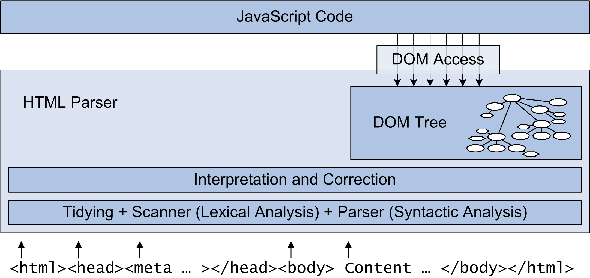

(2) Abstract
Scripting is used on the majority of today's modern Web sites. Scripting can be used to improve the usability and accessibility of a Web site (for example for validating form data on the client side), it can vastly improve the user experience with new interface design (the smooth scrolling of Google Maps vs. older click to scroll
map services), or it can be used to implement behavior that would be impossible without scripting (for example the online applications of Google Docs). This introductory lecture looks into scripting fundamentals such as JavaScript itself, the Document Object Model (DOM) for accessing the browser window's content, and XMLHttpRequest for script-server communications.
(4) Basic Scripting (DHTML)
<!DOCTYPE html PUBLIC "-//W3C//DTD HTML 4.01 Transitional//EN">
<html>
<head>
<meta http-equiv="Content-Type" content="text/html; charset=UTF-8">
<title>Well-Designed JavaScript</title>
<script type="text/javascript" src="nicetitle.js"></script>
<link rel="stylesheet" href="nicetitle.css" />
</head>
<body>
<h1>Well-Designed JavaScript</h1>
<p><a href="http://en.wikipedia.org/wiki/JavaScript" title="Wikipedia: JavaScript is a scripting language used to enable programmatic access to objects within other applications. It is primarily used in the form of client-side JavaScript for the development of dynamic websites.">JavaScript</a> should not make any assumptions about browser support. Ideally, pages using scripting should also be usable when scripting is turned off, so that more basic browsers (for example, mobile phones or Kindles) can also be used for using the page.</p>
</body>
</html>
(5) Basic Scripting (JavaScript)
if( !document.links )
{
document.links = document.getElementsByTagName("a");
}
for (var ti=0;ti<document.links.length;ti++) {
var lnk = document.links[ti];
if ( lnk.title ) {
lnk.setAttribute("nicetitle",lnk.title);
lnk.removeAttribute("title");
addEvent(lnk,"mouseover",showNiceTitle);
addEvent(lnk,"mouseout",hideNiceTitle);
addEvent(lnk,"focus",showNiceTitle);
addEvent(lnk,"blur",hideNiceTitle);
}
} var d = document.createElementNS(XHTMLNS,"div");
d.className = "nicetitle";
tnt = document.createTextNode(nicetitle);
pat = document.createElementNS(XHTMLNS,"p");
pat.className = "titletext";
pat.appendChild(tnt);
d.appendChild(pat);Document Object Model (DOM)
(12) From HTML to DOM
- HTML
[HyperText Markup Language (HTML)] is a representation for hypermedia documents
- a representation is required to store and transmit the document
- HTML uses markup for representing the document structure
- Browsers must render HTML documents (i.e., apply CSS and execute JavaScript)
-
GET HTML from server and receive as
text/html document
- parse document and deal with any errors by
fixing them
- interpret document as if it had been error-free
-
GET all additional resources (CSS, images, JavaScript, …)
- build internal model (DOM) based on error-free interpretation
- apply CSS rules to determine styling of document (e.g., margins and font sizes)
- render into visual structure
- start executing JavaScript code
- listen for events (keyboard, mouse, timer) and execute code
- discard everything and start over when user navigates to a different page
(13) Browser Handling of HTML

(14) Elements, Objects, and Boxes
(15) Document
- The document (HTML) is the interface language for Web applications
- Most programming environments have visual interface models
- almost everything has moved to window-oriented interfaces
- Windows, MacOS, and Linux provide similar visual metaphors
- Web applications must use HTML as their model for the interface
- Forms Basics
[Anatomy of a Basic Web Application; Forms Basics (1)] are a simple way to build an interface
- forms can be extended with client-side helpers (validation, repeating entries)
(16) Object
- Documents are static, programming is dynamic
- documents and code must be connected
- objects are a common abstraction in programming languages
- Objects usually have a type and methods
- types for HTML-based objects are based on HTML's elements
- methods define the allowed to interact with objects
- interactions can be read-only or they can change the document structure
for (var ti=0;ti<document.links.length;ti++) {
var lnk = document.links[ti];
if ( lnk.title ) {
lnk.setAttribute("nicetitle",lnk.title);
lnk.removeAttribute("title");
addEvent(lnk,"mouseover",showNiceTitle);
addEvent(lnk,"mouseout",hideNiceTitle);
addEvent(lnk,"focus",showNiceTitle);
addEvent(lnk,"blur",hideNiceTitle);
}
}
(17) DOM - Document Object Model

-
[http://www.w3.org/TR/CSS21/conform.html#img-doctree]
-
[http://www.w3.org/TR/CSS21/images/longdesc/doctree-desc.html]
-
[http://www.quirksmode.org/dom/intro.html]
(18) Model
- Models are idealized/abstract representations of something
- Models allow to share that idealized/abstract view
- DOM introduced a common way of how browsers deal with HTML
- without a DOM, there can be no interoperable scripting
- Abstractions are also limitations
- some vendors introduced/supported
extensions
to the basic DOM model - any code based on these extensions is not interoperable
- DOM is under constant revision
- DOM0 was invented by Netscape (backing the LiveScript/JavaScript)
- DOM1 was the first DOM version produced by the W3C
- DOM2 is the currently available stable version of DOM
- DOM3 is highly modularized and still under development